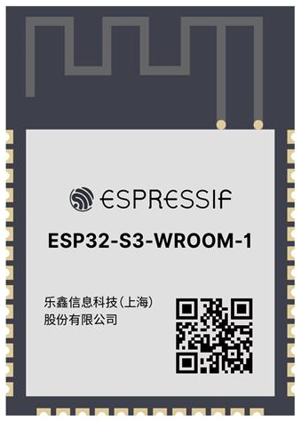
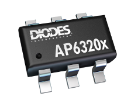

Wi-Fi-Enabled Data Collection and Transmission Subsystem
Overview
In this embedded systems design project, we focus on building a subsystem capable of collecting sensor data, transmitting it over a Wi-Fi network managed by the ESP32 microcontroller, and updating a real-time webpage hosted on GitHub. This document provides both the original component selection rationale and the updated final summary, including new components, an expanded pinout, and a decision-making discussion.
Original Component Selection
Microcontroller
For the heart of our subsystem, we chose the ESP32-S3-WROOM-1-N4. Its built-in Wi-Fi connectivity, processing capabilities, and flexibility make it ideal for sensor data acquisition and transmission.
| Option | Advantages | Disadvantages | Cost & Link |
|---|---|---|---|
| ESP32-S3-WROOM-1-N4 | Built-in Wi-Fi/Bluetooth, supports I2C/SPI/UART, low power modes, 4MB Flash | 3.3V logic may require level shifters for certain peripherals | $2.95 DigiKey |
| ESP8266 | Affordable, simple to use | Limited GPIO pins, lacks dual-core processor | $1.60 DigiKey |
| Raspberry Pi Pico W | Dual-core, built-in Wi-Fi | Higher power usage, larger physical size | $6.00 DigiKey |
Choice:
We selected the ESP32-S3-WROOM-1-N4 due to its superior Wi-Fi capabilities, dual-core processor for multitasking, and compatibility with sensor interfaces like I2C and SPI.

{kind=link}
Power Regulation
To ensure stable operation of the ESP32 and connected sensors, we require a voltage regulator that steps down the input voltage to a steady 3.3V.
| Option | Advantages | Disadvantages | Cost & Link |
|---|---|---|---|
| AP63203WU-7 | Simple design, low cost | Low efficiency | $1.38 DigiKey |
| LM2596 | High efficiency, more robust | Larger size | $6.70 DigiKey |
| HT7333 | Ultra-low quiescent current | Limited current output | $2.65 DigiKey |
Choice:
The AP63203WU-7 was chosen for simplicity, affordability, and SMD compatibility.

{kind=link}
Power Input
To provide consistent power for the ESP32 and sensors, we selected a DC Barrel Jack Adapter for reliable external power.
Additional Recommended Components
- Boot and Enable Buttons
- Decoupling Capacitors (10µF, 0.1µF)
- LED Indicators
Updated Final Component Selection
| Component | Role | Key Specifications | Justification |
|---|---|---|---|
| ESP32-S3-WROOM-1-N4 | Microcontroller & Wi-Fi module | Dual-core Xtensa MCU, 4 MB Flash, 3.3 V | Native Wi-Fi/MQTT support, low-power modes, ample I/O |
| AP63203WU-7 | 3.3 V Voltage Regulator | 600 mA output, SOT-23 package, low noise | Stable 3.3 V, small footprint, cost-effective |
Passive components, pushbuttons, and indicators are documented elsewhere.
Updated Pinout Configuration
| Function | ESP32 Pin | Peripheral / Signal | Notes |
|---|---|---|---|
| Power Supply Input | VIN | DC Barrel Jack (5–12 V) | Feeds voltage regulator |
| Regulated Output | 3V3 | 3.3 V rail | Supplies ESP32 and sensors |
| Wi-Fi Antenna | ANT | External antenna | Optional for range enhancement |
| UART TX (Debug) | GPIO17 | UART1 TX | Serial debug communication |
| UART RX (Debug) | GPIO18 | UART1 RX | Serial debug communication |
| MQTT Task Scheduling | — | Firmware logic | Runs on dual cores |
Decision-Making Process
- Core Requirements
- Reliable Wi-Fi & MQTT support
- Sufficient processing headroom
-
Low-power operation on 3.3 V
-
Evaluation
- ESP32-S3: Chosen for integrated Wi-Fi, dual cores, OTA support, and low-power modes.
-
AP63203WU-7: Chosen for clean 3.3 V, up to 600 mA, compact SOT-23 package.
-
Requirements Alignment
- Reliability: Proven components with wide community support.
- Scalability: Extra I/O and integrated wireless allow future expansion.
-
Maintainability: Standard interfaces and libraries simplify firmware updates.
-
Feedback Addressed
- Added decoupling capacitors for power stability.
- Remapped debug UART to free primary pins.
Conclusion
By retaining the original rationale and integrating the updated summary, pinout, and decision-making insights, this document now fully reflects both the initial component evaluation and the final selections that satisfy the subsystem requirements.